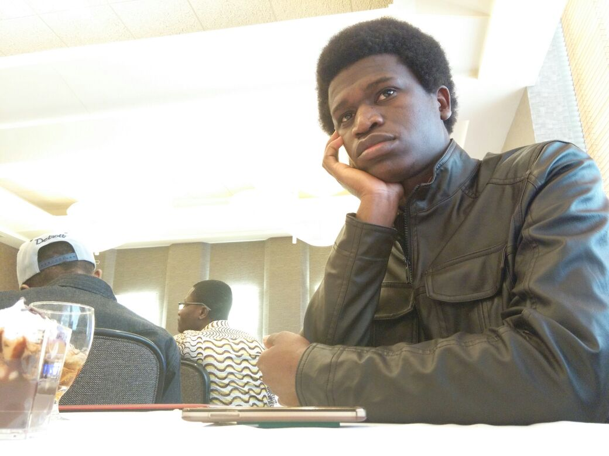

My name is Rellika Kisyula Rellikson, and I am from Kenya. I am a student at Michigan State University (MSU) in Michigan, United States. I am Media and Information major at the College of Communication Arts and Science and minor in Game Design and Development in the same college. I am also planning to minor in Computer Science at College of Engineering and Computational Mathematics Science and Engineering in the same college. I am a recepient of Honors College.
Through my major and my minors, I have been exposed to different ICT, Technical and Media skills which will help me a lot in pursuing my dreams. In Media field, I have done video production, graphic design and photography for ample time. I have been heavily involved with MSU Telecaster (MSU TV, SideShow and Turn) as a video editor, graphic designer and technical assistant. While in high school, African Leadership Academy, I was also involved in video production, graphical designs such as brochures and audiovisual productions. My familiarity with video editing software such as Avid Pro, Final Cut Pro and Adobe Creative Suite through professional and personal experience would be helpful in as I pursue my career.
In Computer Science, I have been exposed to Object-Oriented Programming languages such as Python, Ruby and C++, Web programming languages such as Cascading Style Sheet(CSS), Ruby on Rails and HTML. I am also familiar with Angular-Web Design, Server-Side Web Development and 3D Computer Animation using software such as Autodesk Maya and Blender. In Honors College, I have been heavily involved with SpartaSoft, a club dedicated to game development. Lastly, through CMSE, I have gained a lot of skills required for data visualization, algorithms and models. I am so thankful to have such an opportunity in MSU